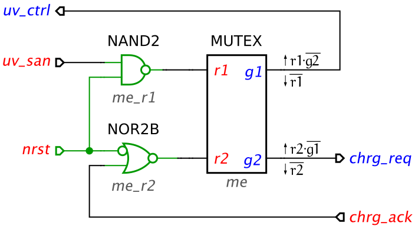
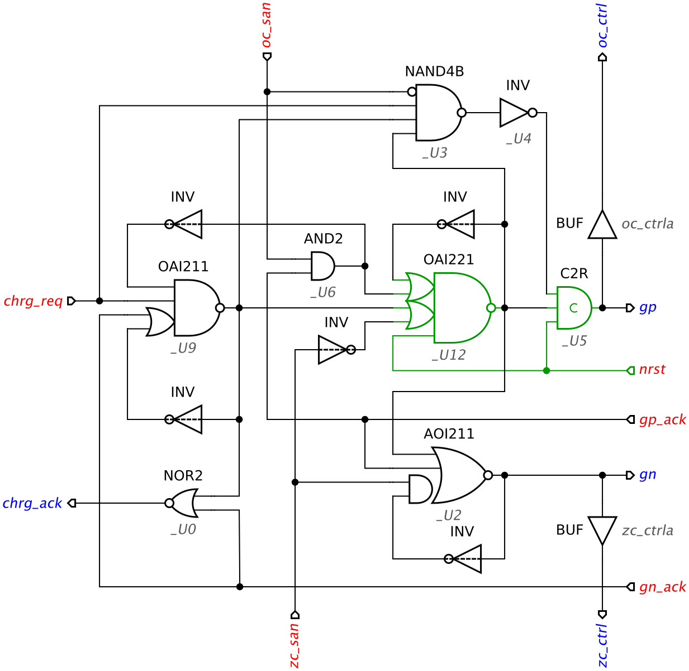
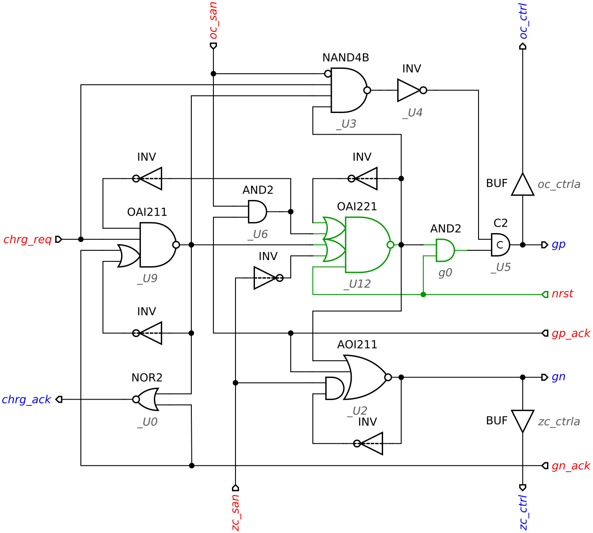

Table of Contents
Initialisation of speed-independent circuits
Initialisation (or reset) of a speed-independent circuit is a crucial part of the design process because a circuit can malfunction if its initial state is incorrect. Note that the initialisation phase of a speed-independent circuit does not have to be speed-independent: It is assumed that there is a special nrst signal that is generated externally and behaves as follows:
- When the power is connected,
nrstis low. - It stays low for sufficiently long time to complete the initialisation of all gates.
- Eventually
nrstgoes high, at which point the circuit is already correctly initialised and the normal speed-independent operation begins. nrststays high for the whole time of circuit normal operation.
There are several ways of circuit initialisation that can be used in combination:
- Rely on the initial state of some of the inputs (which are guaranteed to be correctly initialised by the environment). They propagate through some of the logic gates to initialise some of the internal and output signals.
- Substitute some of the gates with ones containing an extra input that can act as a set or reset pin.
- Insert additional gates to explicitly initialise the internal and output signals. Such gates will act as buffers during the normal operation, so one has to be careful not to break any isochronic forks.
In this tutorial we will use CYCLE and CHARGE modules developed in the Hierarchical design of a realistic buck controller tutorial. They can be downloaded here: cycle-tm.circuit.work (3.12 KiB) and charge-tm.circuit.work (7.02 KiB).
We will use the Initialisation analyser ![[I] Initialisation analyser](../../help/editor_tools-initialisation_analysis.png "[I] Initialisation analyser") tool to decide how to properly reset these circuits. In this tool the following notation is used:
tool to decide how to properly reset these circuits. In this tool the following notation is used:
- The wires and pins whose initial state is guaranteed to be
0or1are coloured blue or red, respectively. - Wires and pins whose initial state is not guaranteed are coloured black.
- If there are initialisation conflicts, the problematic gates are highlighted in orange.
- Gate outputs that are forced by a user to the correct initial state are visualised by the diamond shape of these pins.
CYCLE module
For initialisation of CYCLE we cannot rely on any inputs. Indeed, the WAIT2 element on uv_ctrl/uv_san interface does not have an explicit reset and the initialisation of CYCLE component on chrg_req/chrg_ack is not yet considered. The two inverters me_r1 and me_r2 on the MUTEX inputs are good candidates for introducing reset – click both of them to indicate their force initialisation (notice the diamond shape of their forcefully initialised output pins). As the result MUTEX grants get initialised in their correct initial states.
Now let us alter the circuit schematic and insert active-low reset signal nrst. This step will be automated in the future version of Workcraft, but currently we have to do it manually.
The output of inverter me_r1 needs to be initially high. This can be achieved by replacing this inverter by a NAND2 gate (set function for ON output is (A*B)') whose one input is connected to nrst. The output of me_r2 inverter is initially low, therefore it should be replaced by a NOR2B gate (set function for ON output is (AN' + B)') whose inverted input is driven by nrst. The modified circuit should look as follows (reset wires and modified gates are coloured dark green):

Use Initialisation analyser to check that it is sufficient to set nrst to 0 to force this amended CYCLE circuit to its initial state. Also observe that when nrst goes high the circuit becomes equivalent to the original one.
CHARGE module
For initialisation of CHARGE module one can already rely on CYCLE component initialising chrg_req input to 0. Click on this input port to indicate that its initial state is guaranteed by the environment. The gates that are initialised correctly through this input will be highlighted green.
Now consider C-element _U5. At the initial state its inputs have the opposite values, and so cannot force its output to any particular value, i.e. it needs to be forced to the its initial state. Click on the C-element to indicate that we will explicitly initialise it (its output pin will become of diamond shape).
There is a combinational loop in this circuit that need explicit initialisation – the one with _U12 gate. Click the output of this gate to indicate that you will take care of explicitly initialising it to the required state. Now most of the gates are highlighted green:
Let us see how the remaining gates can be initialised. Note that both oc_ctrl and zc_ctrl outputs are now successfully initialised to 0. At the top level, these signals interface the WAIT elements that produce oc_san and zc_san inputs, respectively. As WAIT element resets its san output when its ctrl input is low, the signals oc_san and zc_san are guaranteed to be initially low – click these inputs to indicate this.
As we found a strategy to fully initialise the CHARGE component, let us implement it at the gate-level. The following changes are required:
- Replace C-element
_U5with a resetable C-element – modify its Set function toA * B * RN, and Reset function to(A + B)' + RN'. - Replace gate
_U12fromOAI22toOAI221– modify its Set function to((A1 + A2) * (B1 + B2) * C)'. - Connect
nrstto theRNpin of_U5to theCpin of_U12.
The CHARGE component with the initialisation circuitry looks as follows (the initialisation wires and modified gates are coloured dark green):

Again, use Initialisation analyser to check that all the gates are correctly initialised by forcing only nrst, chrg_req, oc_san, and zc_san inputs. Observe that when nrst is high, the circuit becomes equivalent to the original one.
An alternative way to reset the _U5 C-element is by forcing both its inputs to 0. This can be achieved by inserting an AND2 gate (set function for O output is A * B) in the wire between _U12 and _U5 gates and connecting nrst to one of its inputs:

Note that it is not always safe to insert gates into a fork branch as this may break the isochronic fork assumption. In this particular case, however, delaying the fork branch does not cause a problem. You can check this by inserting a buffer in this wire (right-click on the net and select Insert buffer command in the popup menu) and verifying that conformation, deadlock freeness, input properness and output persistency still hold. As an experiment, try to delay the other branches of this fork and see if this is safe. When verifying the circuit do not forget to set its Environment property so it points to the correct STG specification of CHARGE module (this can be done via the Property editor of the model).
Exporting to Verilog
Both CYCLE and CHARGE modules are mapped into a gate library and correctly initialised. Now they can be exported to Verilog for the rest of the design flow using File→Export→.v (Workcraft Verilog serialiser) menu. Here is a result of exporting the CYCLE module:
- cycle-tm-reset.v
// Verilog netlist generated by Workcraft 3 -- https://workcraft.org/ module CYCLE (chrg_ack, chrg_req, uv_ctrl, uv_san, nrst); input chrg_ack, uv_san, nrst; output chrg_req, uv_ctrl; NAND2 me_r1_rst (.ON(me_r1_rst_ON), .A(uv_san), .B(nrst)); NOR2B me_r2_rst (.ON(me_r2_rst_ON), .AN(nrst), .B(chrg_ack)); MUTEX me (.r1(me_r1_rst_ON), .g1(uv_ctrl), .r2(me_r2_rst_ON), .g2(chrg_req)); // signal values at the initial state: // me_r1_rst_ON !me_r2_rst_ON uv_ctrl !chrg_req !chrg_ack !uv_san !nrst endmodule
The produced Verilog inherits the names of gates and pins as they are defined in the Property editor for the corresponding nodes. The specification of these gates are taken by the technology mapping backend from the library/workcraft.lib GenLib file by default. A custom GenLib file can be supplied via Digital Circuit→Gate library for technology mapping property of global settings (accessible via Edit→Preferences… menu).
These names can also be substituted by providing a conversion file in the Digital Circuit→Substitution rules for export property of global preferences. For example, libraries/workcraft-tsmc_ghp.cnv file has the rules to convert librarys/workcraft.lib gates to match the naming convention of TSMC GHP library. For CYCLE module the produced TSMC-compatible Verilog is as follows:
- cycle-tm-reset-tsmc.v
// Verilog netlist generated by Workcraft 3 -- https://workcraft.org/ module CYCLE (chrg_ack, chrg_req, uv_ctrl, uv_san, nrst); input chrg_ack, uv_san, nrst; output chrg_req, uv_ctrl; ND2D1 me_r1_rst (.ZN(me_r1_rst_ON), .A1(uv_san), .A2(nrst)); INR2D1 me_r2_rst (.ZN(me_r2_rst_ON), .A1(nrst), .B1(chrg_ack)); MUTEX me (.r1(me_r1_rst_ON), .g1(uv_ctrl), .r2(me_r2_rst_ON), .g2(chrg_req)); // signal values at the initial state: // me_r1_rst_ON !me_r2_rst_ON uv_ctrl !chrg_req !chrg_ack !uv_san !nrst endmodule
Solutions
Download all the Workcraft models discussed in this tutorial here:
Circuit models (36.1 KiB)
===== Feedback =====
- As discussed in https://www.dokuwiki.org/plugin:include#controlling_header_size_in_included_pages, by default, the headers in included pages start one level lower than the last header in the current page. This can be tweaked by adding an empty header above the include:\\
====== ====== {{page>:tutorial:feedback&inline}} - For offline help generation the content of
feedbackpage should be temporary wrapped in<WRAP hide>. Note that the headers still propagate to the table of contents even if inside the hidden wrap. Therefore the Feedback title needs to be converted to something else, e.g. to code by adding two spaces in front.